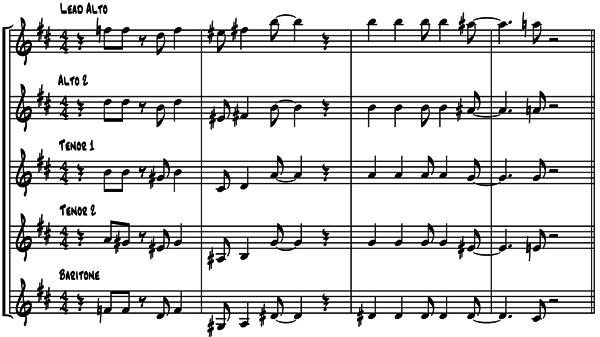

Here is an example of block voicing. It is from a Henderson song, “King Porter Stomp,” arranged by him for the Benny Goodman big band.
These four bars feature the saxophone section. Each of the five saxes is given a note of the chord. Here is what each sax part looks like.
